Geography Worksheets
857 printable Geography worksheets (PDF) with answer keys: reading comprehension passages, reading trails and more – no prep, filter by grade.
857 resources
Grade
By grade: 5th Grade · 9th Grade

Lignite Mining Reading Comprehension Passages | Geography Scavenger Hunt 7-8

Airport Reading Comprehension Passages | Geography Scavenger Hunt 7-8

Global Food Festival Reading Comprehension Passages | Reading Scavenger Hunt 5-6

Finding Meaning in Life Reading Passages | Reading Scavenger Hunt 7-8

Ocean Animals Reading Comprehension BUNDLE | Sharks, Whales & Coral Reefs

Caribbean & Oceania Countries Reading Comprehension BUNDLE | Cloze

Middle East & Central Asia Reading Comprehension BUNDLE | Cloze & Word Search

East & Southern Africa Reading Comprehension BUNDLE | Cloze & Word Search

Southern & Eastern Europe Reading Comprehension BUNDLE | Cloze & Word Search

Latin America Countries Reading Comprehension BUNDLE | Cloze & Word Search

Countries of Asia Reading Comprehension BUNDLE | South & East Asia

Countries of Africa Reading Comprehension BUNDLE | West, North & Central Africa

Countries of Europe Reading Comprehension BUNDLE | Western & Northern Europe

Libia – Italian Reading Comprehension Worksheet (Scheda): Cloze & Listening

Libano – Italian Reading Comprehension Worksheet (Scheda): Cloze & Listening

Lettonia – Italian Reading Comprehension Worksheet (Scheda): Cloze & Listening

Lesotho – Italian Reading Comprehension Worksheet (Scheda): Cloze & Listening

Las Vegas – Italian Reading: Cloze Text, Listening Task & Word Search (Scheda)

Laos – Italian Reading: Cloze Text, Listening Task & Word Search (Scheda)

Lance Armstrong – Italian Reading: Cloze, Listening & Word Search

Lagos – Italian Reading: Cloze Text, Listening Task & Word Search (Scheda)

Lago salato – Italian Reading: Cloze Text, Listening Task & Word Search (Scheda)

Lago di Zurigo – Italian Reading: Cloze, Listening & Word Search

Lago di Neusiedl – Italian Reading: Cloze, Listening & Word Search

Lago di Garda – Italian Reading: Cloze, Listening & Word Search

Lago di Costanza – Italian Reading: Cloze, Listening & Word Search

Lago dei Quattro Cantoni – Italian Reading: Cloze, Listening & Word Search

Kilimangiaro – Italian Reading: Cloze, Listening & Word Search

Lago Lemano – Italian Reading: Cloze Text, Listening Task & Word Search (Scheda)

Lago Bajkal – Italian Reading: Cloze Text, Listening Task & Word Search (Scheda)

L'Aia – Italian Reading: Cloze Text, Listening Task & Word Search (Scheda)
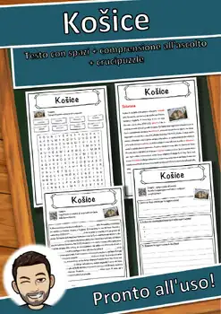
Košice – Italian Reading: Cloze Text, Listening Task & Word Search (Scheda)
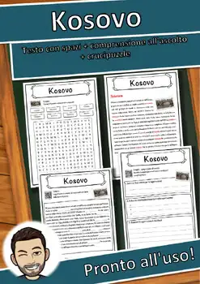
Kosovo – Italian Reading: Cloze Text, Listening Task & Word Search (Scheda)
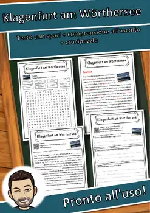
Klagenfurt am Wörthersee – Italian Reading: Cloze, Listening & Word Search
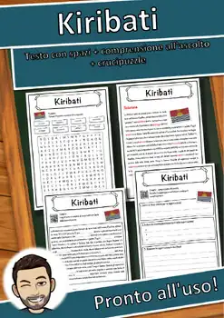
Kiribati – Italian Reading: Cloze Text, Listening Task & Word Search (Scheda)
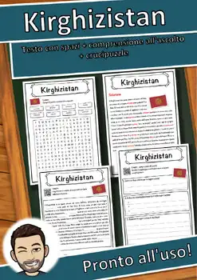
Kirghizistan – Italian Reading: Cloze, Listening & Word Search
Kinshasa – Italian Reading: Cloze Text, Listening Task & Word Search (Scheda)
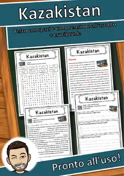
Kazakistan – Italian Reading: Cloze Text, Listening Task & Word Search (Scheda)
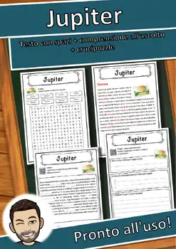
Jupiter – Italian Reading: Cloze Text, Listening Task & Word Search (Scheda)
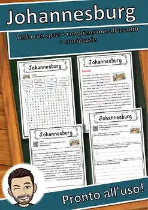
Johannesburg – Italian Reading: Cloze, Listening & Word Search
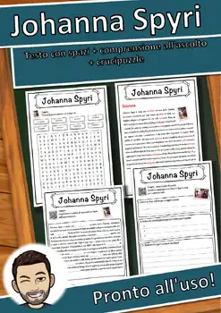
Johanna Spyri – Italian Reading: Cloze, Listening & Word Search
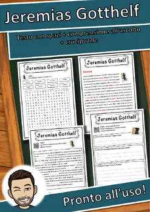
Jeremias Gotthelf – Italian Reading: Cloze, Listening & Word Search
Italia – Italian Reading: Cloze Text, Listening Task & Word Search (Scheda)
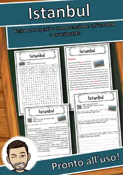
Istanbul – Italian Reading: Cloze Text, Listening Task & Word Search (Scheda)
Israele – Italian Reading: Cloze Text, Listening Task & Word Search (Scheda)
Isole Salomone – Italian Reading: Cloze, Listening & Word Search
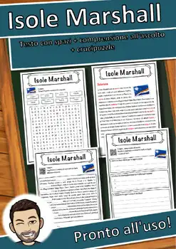
Isole Marshall – Italian Reading: Cloze, Listening & Word Search
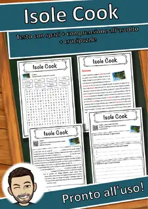
Isole Cook – Italian Reading: Cloze Text, Listening Task & Word Search (Scheda)
No resources found – try a different search term or filter.